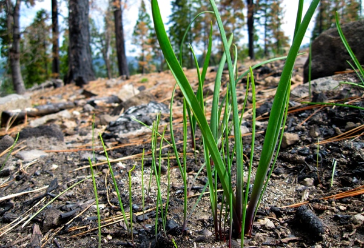

Spring Is Coming: What to Look For
Wild Onion, Garlic, Ramps

When:
As soon as there is a first complete thaw of snow and frost. In very mild climates this could even be as early as January.
Where:
Well hydrated soil with or without drainage from sand. So, the edges of creeks and marshes are great.
What:
Like all bulb plants, first growth is a narrow leaf that reasembles thick grass. Of course, the root will feature the characteristic bulb. The most important thing is that it smells like onion and/or garlic. There are countless highly toxic look alikes. The aroma is the cue that you've found the real thing.